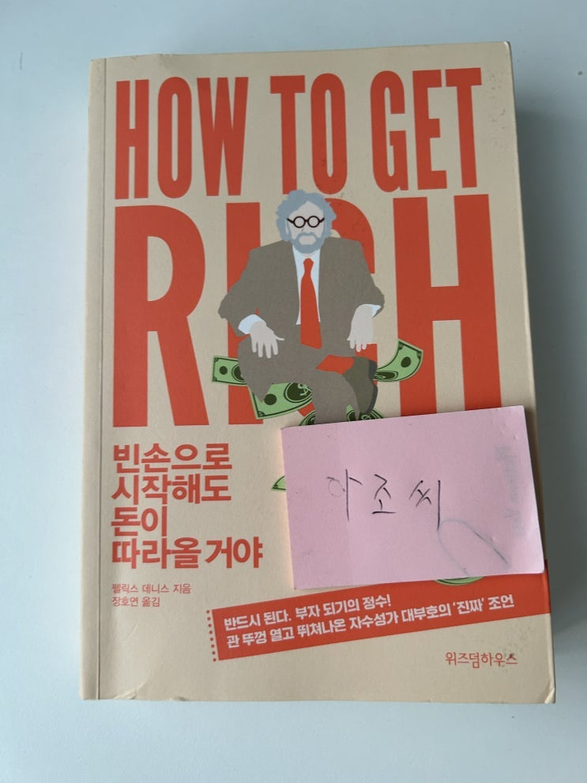

요즘 바빠서 통 책을 한 권을 다 끝내질 못했는데 오래간만에 한 권 끝냈다. (나는 책을 여러권 두고 섞어서 읽는 스타일이
라 지금 동시에 읽는 책이 4권 정도 있음)

펠릭스 데니스는 '부자되는 법'을 가르쳐 주고서 부자가 된 흔한 책팔이는 아니고 진정한 책팔이로서 영국에서 자수성가한
전설적인 출판업자이다.
누군지 모르겠다고?
다들 군대 다녀온 남자들이라면 "맥심" 이 뭔진 알지? 그거 만드신 분이야.
군 생활중 어려 외로운 밤들을 견디게 해준 아조씨의 은인이라고 할 수 있지.
우리 김이병 복귀하면 선임들한테 사랑 박겠네! 사랑박겠어!
(머리 박아)
이 아저씨가 부를 이루는 과정이랑 그로 인한 후유증, 문제점, 장점 등등 여러가지를 솔직하게 이야기 해주는데, 애초에 이
것을 쓰게 된 계기가 말콤 글래드윌 이라는 작자(작가 아니고 작자)가 쓴 책에 대해서 친구랑 이야기 하다가 그런건 꺼지고
진짜 책 만들꺼야~ 라는 식으로 생각해서 만든 책이라고 함.
이 할배가 실제 말한 내용은 아래와 같음 .
"정말로 세상이 원하는 건 안티 자기계발서야. 훌륭한 경영인이 되는게 얼마나 어려운지 말해 주는 책. 말로만 떠들어대는
그럴싸한 통찰력은 꺼지라고 해!"
이런 정신을 가지고 만든 책이라서 그런지 읽어보면 세이노 선생님의 책 '세이노의 가르침' 과 거의 같은 내용이 많이 나온
다. 세이노 선생님의 영국 버전(?) 이라고 보아도 틀리지 않을 듯.
얼마전에 이 책에 나오는 좋은 내용인 협상 관련 내용도 블로그에 적었는데, 너무 좋은 내용이 많긴 한데 몇 가지만 적어볼
까 한다
(요즘엔 핸드폰들이 좋아져서 사진만 찍으면 텍스트를 바로 옮길 수 있네 세상 많이 좋아졌다)
협상을 잘하는 비결 (출처: 펠릭스 데니스 How to get rich)
아침에 How to get rich라는 고전(?)을 읽다가 발전한 보물같은 문장이 있어서 공유해보고자 한다. 직업인...
교훈은 분명해. 오리지널이 최선은 아니라는 거지. 독창성이 항상 최고의 자리를 보장해주는 것은 아니야. 부자
가 되고 싶다면 라이 벌의 행동을 주시하다가 좋은 전략이 있으면 서슴없이 따라 하라고 한동안 조롱 받긴 하겠
지만 그 대가로 엄청난 이익이 돌아올 거야.
좋은 아이디어의 문제점은 마음이 온통 아이디어 자체에 쏠린다 는 거야. 거기까지는 좋아. 그런데 제대로 훌륭
하게 실행되지 않는 다면 아무리 좋은 아이디어도 말짱 헛수고일 뿐이야. 게다가 사업은 실패하고 말지. 아이디
어는 분명 엄청나게 중요하지만, 돈 버는 일 보다 자신의 아이디어가 옳다는 것을 입증하려고 회사를 차린 사람
들은 다들 시간만 낭비하다가 흐지부지해지고 말더라고 아이디어가 옳은지 아닌지는 아무도 신경 쓰지 않아. 아
이디어를 낸 본인만 신경 쓰지.
p108 - 아이디어에 빠지는 것에 대한 비판 내용
직원들의 봉급 총액을 최소한으로 낮춰라. 경비도 은근히 많이 든다.
사무실을 장기 계약하지 말고, 비싼 동네에 사무실을 열지 마라.
사업의 성격상 고객들에게 특별한 인상을 심어줘야 하는 경우가 아니라면 사무실을 호사스럽게 꾸미거나 근사
한 가구를 들여놓지 마라.
상대방이 비즈니스 접대를 하겠다고 할 때 자기가 사겠다고 하지 마라. 그럴 기회는 나중에도 충분히 생긴다.
당신의 봉급은 먹고살 만큼만 받아라.
외상 고객은 개인적으로 불러서 이야기를 나눠라. 분명 효 과가 있다
시내에서는 가급적 걸어 다녀라. 건강에도 좋고 사람들에 게 모범이 될 수도 있다.
직원들의 여행비와 오락비 청구서를 면밀하게 살펴라.
대금 지불이 늦어질 것 같으면 협력업체 사장을 불러 양해 를 구해라. 언제까지 주겠다고 약속하고 기한을 꼭 지
켜라.
직원들 봉급 날짜는 당신이 굶는 한이 있어도 꼭 지켜라.
직원들에게 회사 명의의 신용카드, 휴대전화, 차를 쓰라고 하면 망하기 딱 좋다.
밤새도록 사무실에 조명과 컴퓨터, 프린터, 복사기를 켜놓 는것은 어리석은 짓이다.
매주 사무실 입구에 멋진 화병을 갖다 놓으면 근사하지만 엄청나게 비싼 이탈리아제 가구를 놓는 것보다 좋은
인상 을 만들 수 있다.
비굴함에 익숙해져라. 비굴함은 창업자의 현금흐름을 원 할하게 해주는 훌륭한 도구다.
그들은 당신의 사업을 원한다. 당신 사업에 재료를 대는 업체들을 서로 경쟁시켜라. 그것도 무자비하게.
극단적인 상황이 아니라면 팩터링 거래는 하지 마라. 했다 면 가급적 빨리 벗어나라.
낙담하지 마라. 최악의 상황은 아니지 않은가. 누군가의 밑 에서 일할 수도 있었으니까.
p154 - 사업초기에 현금 흐름이 중요함을 설명하며
위험은 보상이야. '성실하게 그날 하루 일하고 적절 한돈을 받는 것'은 위험을 무릅쓰는 것과는 전혀 달라.
당신이 우리 회사에서 일한다면 괜찮은 수준의 봉급을 줄 거야.
일하기에 훌륭한 직장이 되도록 노력할 거고, 그럴 필요가 있으면 인센티브도 주고, 연금도 주고, 어쩌면 당신과
당신 가족의 의료보험도 내주고, 당신의 업무 능력을 키워 개인의 가치를 높이도록 가르치고, 유급휴가를 보내
주고, 들볶거나 부당한 차별을 하지 않을 것이며, 직장 생활의 안전도 챙길 거야. 이 모든 멋진 것들을 제대로 일
관성 있게 해줄 거야. 다만 내가 가진 자산을 매각해서 얻은 수익은 한 푼도 나누어 줄 수 없어. 공정하지 않아?
내 말에 동의할 수 없다면 다른 직장을 알아봐.
이게 바로 내가 부자이고 당신은 그렇지 못한 이유야.
p305 - 사업에선 소유권이 매우 중요하다는 것을 설명하며
아 근대 마지막 꺼는 회사에서 모든 것을 다 받아본 최강 사노비로서 너무 눈물 난다. 내가 최강 사노비라서 부자가 아니였
구나 싶어서 ㅠㅠ
아침부터 순살 되네... 사장님 여기 2000원 추가요!
혹시 책 읽긴 싫고, 영어 공부하고 싶고, 내용은 알고 싶다면 아래 북 서머리를 들어봐~ 나도 안들어 보긴 했는데 사람들이
추천하드라고.
https://youtu.be/v-y-2fPJLRQ
안녕 친구들! 오늘은 여기까지!
끝